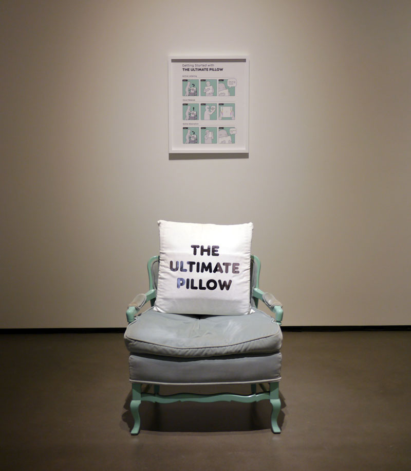
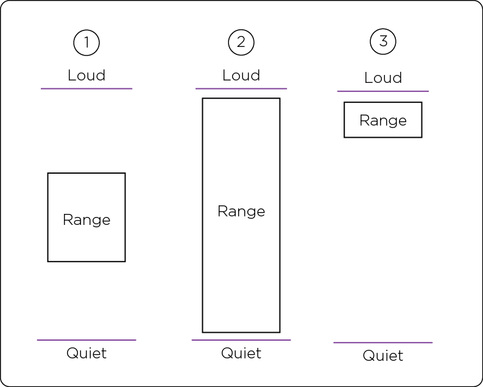
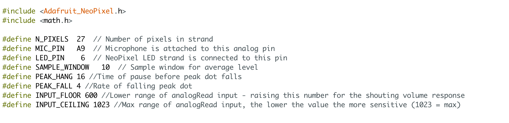
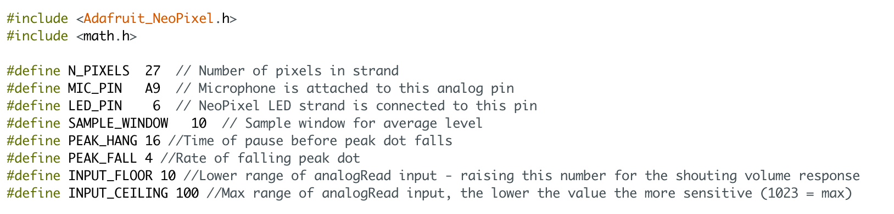

The Ultimate Pillow is an interactive pillow with three main active functions and one passive function:
1) a soft button that when pressed, triggers postive reinforcement
2) an LED sound meter which monitors the level anything yelled at the pillow
3) a tear function that offers specific feedback when saline absorbtion has reached a certain level
4) the passive function calls for attenion if the pillow is not touched for a half hour.
To learn about the early construction of the pillow, check out the first pillow prototype page. The Ultimate Pillow was made as part of my MFA. There's more info about the pillow in my written thesis including development, research, and context. Check it out!


How the audio sensitivity range works in the LED circuit

Code that produces a less sensitive range

Code that produces a more sensitive range